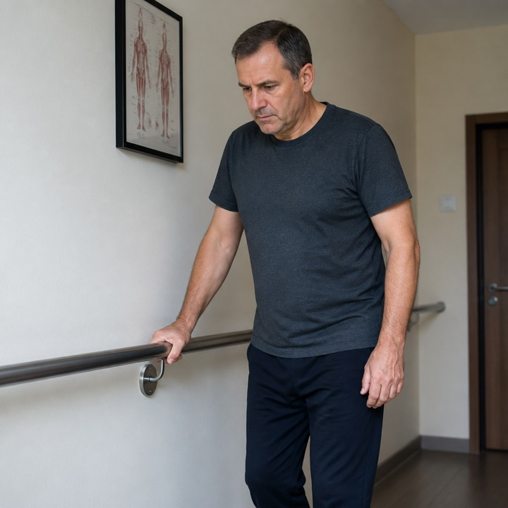
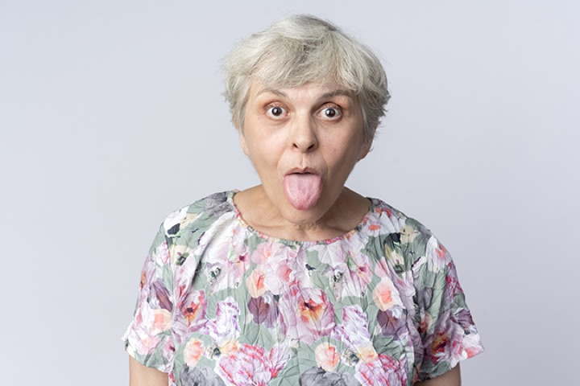

Случаи из практики: жалобы, анамнез, статус и обследование — с вопросами и разбором. Попробуйте поставить диагноз до ответа.
Пенсионер, 65 лет, обратился в неврологическое отделение. Жалобы на двоение в глазах, слабость в правых конечностях и нарушение походки, появившиеся…

Мужчина 48 лет доставлен в приёмное отделение родственником. Жалобы на выраженную слабость, шаткость походки, двоение в глазах и нарастающее…
Женщина, 27 лет, доставлена мужем в приёмное отделение. Жалобы на внезапно возникшую слабостью в правых конечностях, головную боль и нарушение речи.…
Женщина 67 лет экстренно доставлена бригадой скорой помощи. Жалобы на внезапную интенсивную головную боль, выраженную слабость и нарастающую…
Мужчина, 67 лет, доставлен бригадой скорой помощи с жалобами на внезапно возникшую слабость, икоту и затруднения глотания. Анамнез заболевания: На…
Женщина 65 лет доставлена в стационар в бессознательном состоянии. Анамнез заболевания: по словам родственников, в течение нескольких дней отмечалось…
Мужчина, 36 лет, обратился к неврологу на амбулаторный приём. Жалобы на повторяющиеся приступы интенсивной боли в области правого виска и глаза,…
Мужчина 61 года доставлен в приёмное отделение с внезапной потерей сознания. Жалобы: На момент поступления контакт ограничен. Анамнез заболевания: Со…

Женщина, 57 лет, пришла на амбулаторный приём к неврологу. Жалобы на жжение в области языка и передних отделов полости рта, которое возникает каждый…